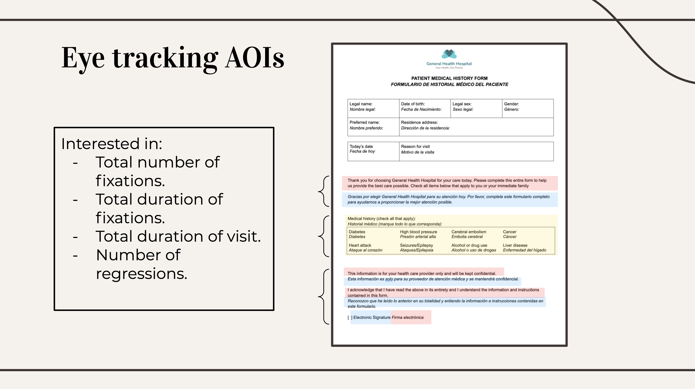

Research study on layout of multi-lingual documentation
I worked with a team of 8 graduate students conducting a research study that compared visual presentation of Spanish text in relation to English text on single stream documentation. This study aims to recommend the most reader-friendly layout of information for Spanish speakers not proficient in reading English.
Throughout this project, conversations among the group led to the consensus that the best solution is to provide separate information in the language preferred by the client or user. However, it is not uncommon to see text presented in multiple languages on the same form. Therefore this research is relevant to improve intended communication where printing separate documents is not feasible.
Challenge
To compare readability of Spanish text presented in different formats in relation to English text - left and right, top and bottom, and interleaved. We aimed to provide a recommendation for the best layout to improve readability for Spanish speakers who are not proficient in reading English.
Methodology
- Eye tracking research study
- Questionnaire and user interview
- Task analysis
- Statistical analysis of results
Research study design
We completed a pilot study with 6 participants on different layout versions of multi-lingual documents in Spanish and English. We designed a within groups study using a latin square and three visually comparable documents presented in each layout, and aimed to answer the question: which layout is the easiest to read for primary Spanish readers? Participants were recorded reading the information using the University of Baltimore research lab eye tracker, and asked a series of questions immediately after the reading task. We chose to use eye tracking to help analyze reading behavior of our participants during the tasks. For this study we looked at three common layouts: side by side, top and bottom, and interleaved text.
Background research
My team of three collaborated on a literature review of multi-lingual documentation. We focused on issues in the United States for the population of primary Spanish readers with limited English literacy; we found that healthcare is an area where a lot of improvement needs to be made. Documents are often printed instead of online and communities with higher populations of primary Spanish speakers do not have uniform translation of materials to meet their needs. Our first pilot study used three different documents with generalized relevance (for example, booking a park area for an event). After this pilot we have redesigned the study to use only sample documents related to healthcare that can be printed or viewed on a screen, as the interactive components are not the focus of this research project.
Eye tracking analysis
We chose to look at the metrics time taken to read text per character and the total dwell time per AOI (area of interest). Based on a review of eye tracking research, we beleive these to be a good measure of readability. For the next iteration of this study we plan to add a regression metric between AOIs, as this will show interruptions to the natural reading flow. We will question participants to reveal whether this is purposeful behavior (for example, to check the validity of information between translations...this is more likely with people who are confident readers in both languages) or if it has a negative impact on overall satisfaction with the task.
We decided against eye tracking visualizations, as these were not necessary to form our conclusions. We were interested in inferential analysis that might show significant difference between readability of different layouts. A visualization of the order of eye movements may be helpful if we are able to 'zoom out' to look at the order participants looked between translations; this is a potential limitation of the Tobii software, which we will clarify leading up to the next pilot study.

Task analysis
We created an interview questionnaire to ask each participant immediately after performing each task. These were close-format questions to enable quantitative analysis, which we thought would be the most helpful data to form conclusions about readability. The questionnaire was used to explain and support eye tracking results, as eye tracking is unable to reveal reasons behind the data. We asked comprehension questions which would show difficulty with reading if combined with longer reading times and greater regressions between languages. We also asked questions of satisfaction to help support our interpretation of the eye tracking data - if satisfaction lines up with our interpretation of difficulty, then we believe we have shown reduced readability for that layout.
Project reflections
This research project is ongoing; the above describes our first pilot study, which showed us many areas to adjust for a second pilot leading to our ultimate research study. The data from this pilot did not show significance, which we believe is due to the small sample size and limited qualification screening. We had to exclude certain participants who did not ultimately meet our criteria (they were proficient in reading English, and therefore not representative of our population of interest), which meant our sample size was too small to draw any conclusions.
Our background reading revealed that this is an important area of research and could make a positive impact in the field of design. Therefore, as a group we decided to use this experience as a pilot study and improve our research design to revisit in the summer of 2022. Improvements to our research fall mainly on recruitment and verification of meeting the criteria (we are working to find a community partner who will allow us to travel to our participants in the hope of increasing turnout). We will also adjust our document designs to reflect a specific industry, in this case healthcare, to help us focus our findings for an interested audience.